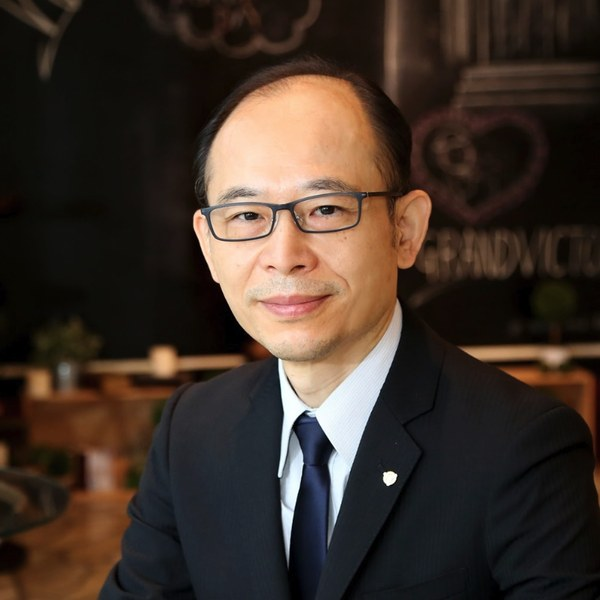

PROFILE

ひらいずみ・きにお
やまと式かずたま術 公認鑑定士・ベーシック講師
はじめまして。やまと式かずたま術 公認鑑定士の平泉喜仁央（本名・石原堅）です。
私はオリンパス株式会社で40年にわたり、ものづくり・品質保証・海外営業の現場を歩いてきました。数字と論理で判断する世界に長く身を置きながら、いつも心に残っていたのは、同じ能力を持つ人でも、置かれた役割やタイミングによって輝き方がまるで違う、という不思議でした。
かずたま術と出会ったのは、独立後、目標達成コーチとして活動していた頃のことです。鑑定士でもある友人のコーチから鑑定を受け、驚きました。自己理解が一気に深まったこと。そして、自分の人生の節目——動いた時期、待つべきだった時期——が、数の示すタイミングとぴたりと重なっていたこと。長年ビジネスの現場で数字を見てきた私が、理屈で納得できたのです。この体験が、自ら学ぶ道へと進むきっかけになりました。
やまと式かずたま術は、あの長年の問いに、数の法則という形で答えをくれました。誕生日が示す「役割」と、名前が示す「資質」。この2つを知ることは、人生の航路図を手にすることだと、私は考えています。
信頼は、一朝一夕には築けません。目の前のお一人おひとりと、顔の見える関係を大切に。鑑定でお会いできるご縁を、何よりの宝と思っています。
鑑定は「言い当てる」場ではなく、ご自身の言葉で気づいていただく場だと考えています。結果はそっとお渡しし、どう受け取るかはご本人の中にある答えを大切にします。
経営の現場を長く歩いてきたからこそ、経営者の方には事業の言葉で、働く方にはキャリアの言葉で。数の法則を、実生活で使える形に翻訳してお伝えします。
鑑定は受けて終わりではなく、そこからが始まりです。転換期の迎え方、ご家族との関わり方など、その後のご相談にも寄り添います。
LINE公式アカウントでは、無料のミニ鑑定と各種鑑定のご予約を受け付けています。ご質問だけでも、お気軽にどうぞ。
LINEでミニ鑑定・ご予約へ